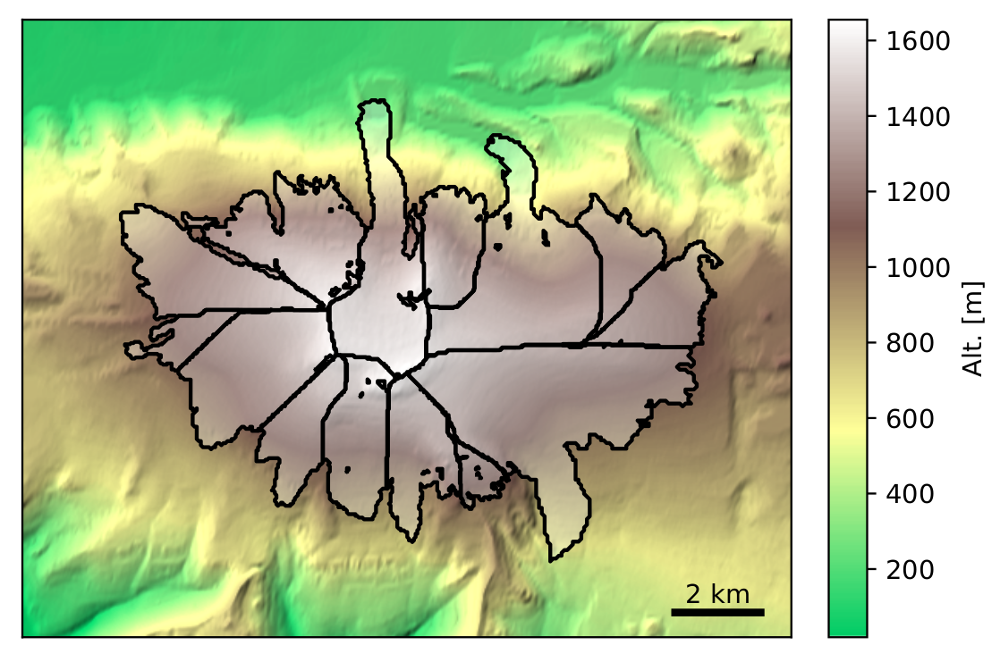
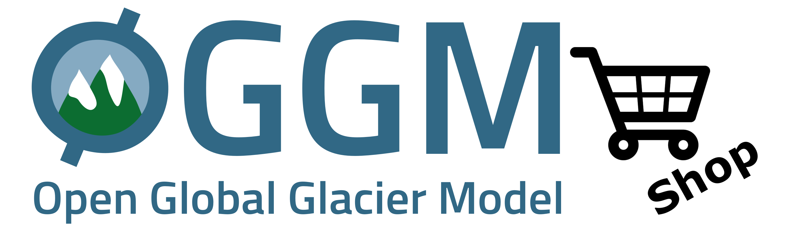
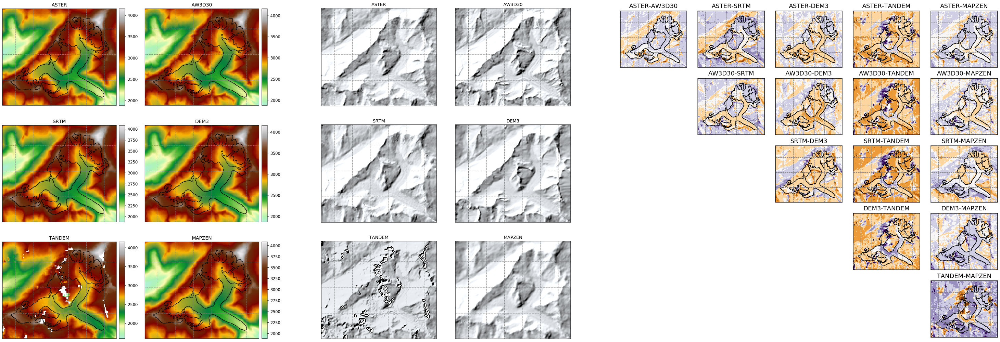

A modern, modular and extensible framework
for large scale glacier modeling
Tutorial IGE 2021
Use
space, shift+space and arrow keys to navigate between
slides.

Unless specified otherwise, the content of this site is licensed under a CC BY 4.0 license.
Goals of today's talk
- (Re-)brand OGGM as a modelling framework in which you can fit your own model and ideas
- Showcase some of OGGM's applications
- List some challenges the project is facing ...
- ... and discuss ways forward
Today's Non-goals
- "Selling" OGGM: other models out there are better in many aspects, and model diversity is the motto that drives our project (if anything, we'd rather try to convince you to contribute to it)
- Traditional unidirectional talk:
please interrupt me anytime
Motivation
 GlacierMIP consortium (Marzeion et
al., 2020)
GlacierMIP consortium (Marzeion et
al., 2020)
Data
Data availability / quality for the 200k of the world's glaciers is low (this is changing very fast, but there is some adoption latency on the model side)Uncertainty
- GlacierMIP model spread shows that the individual models' uncertainty estimates are too low.
- Difficulties to agree on experimental protocols within GlacierMIP leads to apples and oranges comparisons
More physics is always better, right?
Little reflection (so far) in the global glacier modelling community about which processes are adding value and which are adding noise.
OGGM
- Modelling framework facilitating the modelling of many glaciers
- Open source, using modern scientific python
- Community driven ecosystem (at least we try)
- Welcoming and flexible
The OGGM workflow
"Glacier centric" approach

Local grid and DEM
Centerlines
Flowlines and widths
Mass-balance & ice thickness

Glacier evolution

Workflow in practice
Glacier directories
Persistent data containers on disk
Entity tasks

Actions to perform on a glacier directory
CC BY-SA 3.0 Wikimedia
{kind=link}
Global tasks
Actions to perform on many glaciers
In code
# Go - initialize glacier directories
gdirs = workflow.init_glacier_directories(rgidf)
task_list = [
tasks.define_glacier_region,
tasks.glacier_masks,
tasks.compute_centerlines,
tasks.catchment_area,
tasks.catchment_width_geom,
]
for task in task_list:
execute_entity_task(task, gdirs)
Extensible and Modular

(beta
version)
Example: the RGI-TOPO dataset
See the rgitools documentation
Example: ITS_LIVE
gdir = init_glacier_directories(['RGI60-01.10689'])[0]
from oggm.shop import its_live, dems
dems.select_dem(gdir, dem_source='COPDEM')
tasks.glacier_masks(gdir)
its_live.vel_to_gdir(gdir)Reproducible science
See our documentation
Some current and future projects based on OGGM
Some applications
+ some other things
- decalal projections
- regional ice thickness estimates
- RGI v7
- PyGEM collaboration
Some developments
 Frontal ablation playground
Frontal ablation playground
Loads of simulations
More simulations
#Buzzwords
data assimilation, bayes, ensemble approachesChallenges
- Technical debt
- Expectations of new users vs reality
- Entry level for new contributors is high
- Maintenance work relying on too few scientists
- Funding of incremental improvements is difficult
Discussion
- Future of the flowline?
- How much complexity is just right?
- Publish or perish (or: how do the others publish so much?)
Take home
- OGGM is a modelling framework:
cherry picking is encouraged! - your own fantastic model or game changing idea might fit into the framework: get in touch with us!
- check out oggm.org and edu.oggm.org,
and help us to make it even better!
Agenda for the rest of the day
-
Let's run oggm on the cloud! hub.oggm.org